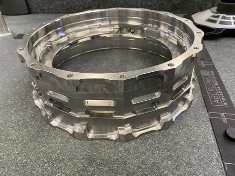
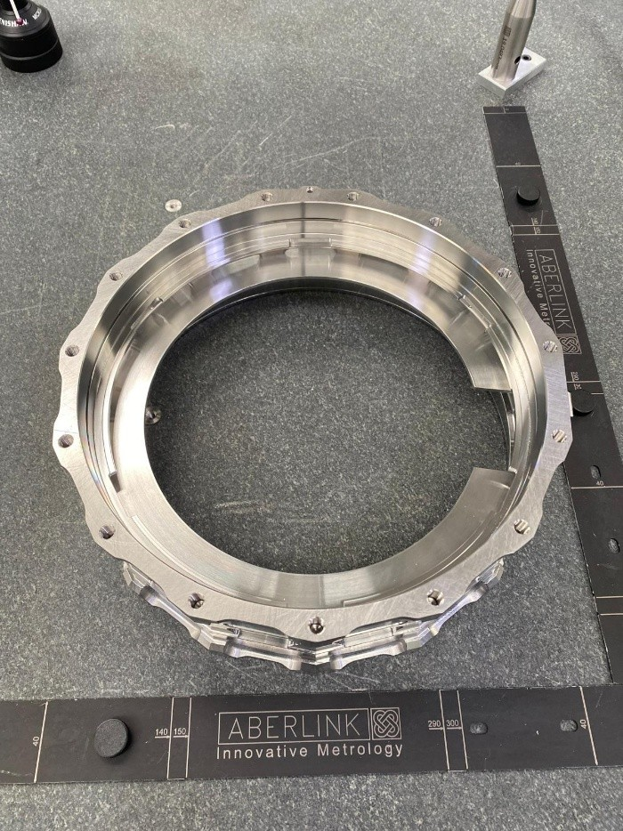

Different faces and internal features required planned probe orientations. PH10T Probe Angles A&B indexing and stylus configuration were selected around feature accessibility, reach, clearance and measurement requirements.
The part coordinate system was established from the required references. Additional planes were constructed manually so circular and arc features could be evaluated on the appropriate geometric reference.
Some internal planes and radii were inaccessible from one orientation, so the routine was structured into Side 1 / Side 2 measurement sequences with controlled probe reorientation between faces.
As geometry is measured, Aberlink 3D can establish a protected Safe Volume around the measured component. I used strategically selected boundary / extreme features early in the routine so the relevant volume was established before detailed inspection. Move Via points were then introduced between measurement groups to keep travel controlled within the established volume before an intentional escape for probe reorientation or another face.
Different stylus configurations were selected according to accessibility, reach, clearance, probe orientation and measurement performance. Measurement-point count and distribution were treated as an engineering decision influenced by feature geometry, tolerance, form requirements and the confidence required from the inspection result.